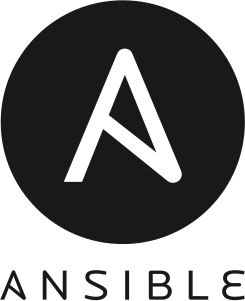
Ansible is a free software platform (With paid features) for configuring and managing computers. It combines multi-node installation, ad hoc task executions, and configuration management. Additionally, Ansible is categorized as an orchestration tool. Developed by Ansible Community / Ansible Inc. / Red Hat Inc. Operating system Linux, Unix-like, MacOS, Windows. Written in Python, PowerShell, Shell, Ruby https://docs.ansible.com/
Ansible is a tool that allows you create and control three key areas that you'd have within your operations enviroment:
IT automation
You can write instructions that automate the IT setup you would tipically do manually in the past.
Ansible is a radically simple IT automation engine that automates cloud provisioning, configuration management, application deployment, intra-service orchestration, and many other IT needs.
Configuration Management
Consistency of all systems in the architecture is mainteined.
Automatic deployment
Aplications are deployed automatically on a variety of enviroments.
Local Machine is where Ansible is installed.
When you're setting up a Ansible environment the first thing you whant to do is have a local machine and that local machine is where you're gonna have all of your instruction and the power of control that you'd be pushing out to the remote server. The local machine is here you're starting and doing all of your work.
Nodes are the systems to be configured. They are control by the local machine
Coneccted from the local machine are all the different nodes pusshing out the different configurations that you would set up on the local machine.
Module is a collection of configuration code files
The configuration that you would write and you would write those in code are within a module so you do this on your local machine for creating this modules and each of these modules is actually consistent playbooks
The local machine also have a second job and that job is to manage the inventory of the nodes you have on your environment.
The local machine is able to connect to to different nodes that you would have in your hardware network through SSH clients
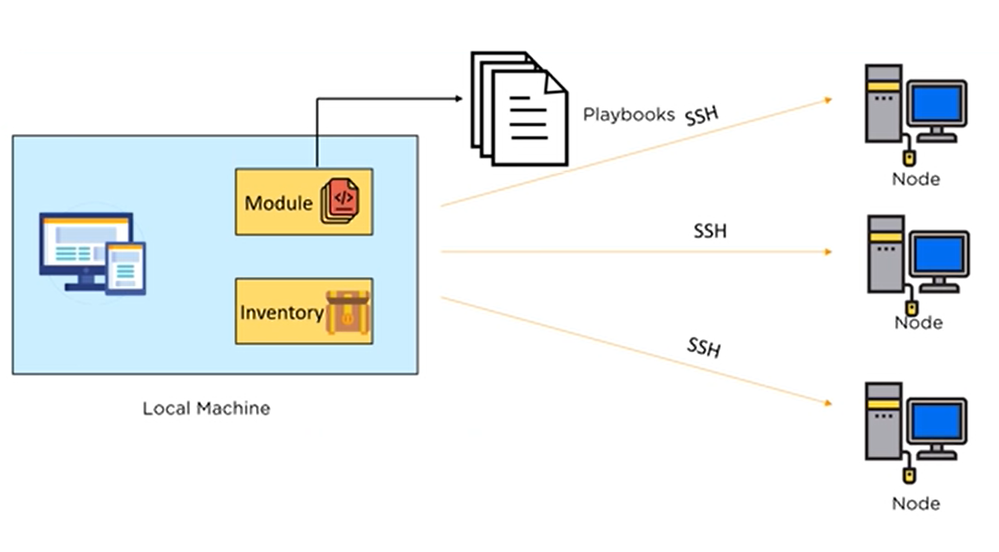
The core of Ansible is the playbook, this is where you create the instructions that you write to define the architecture of your hardware. Is a set of instructions that configure the differents nodes that you have and each of those sets of instructions is written in a language called Yaml.
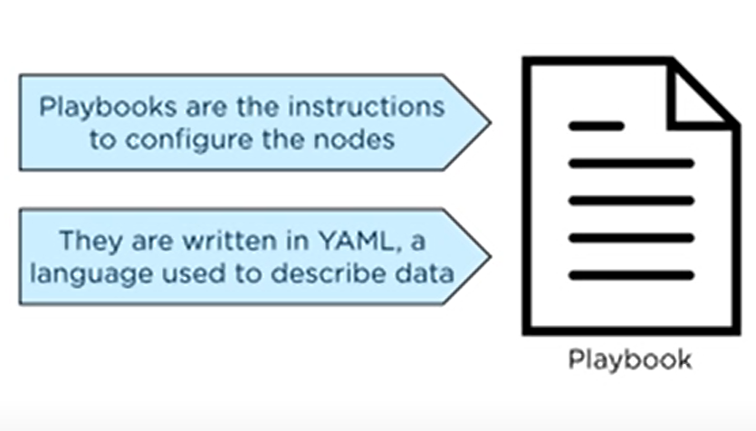
Yaml is a standard language configuration used for configuration server environments.
You set off your Yaml script with three dashes " --- " and that indicates the start of the script.
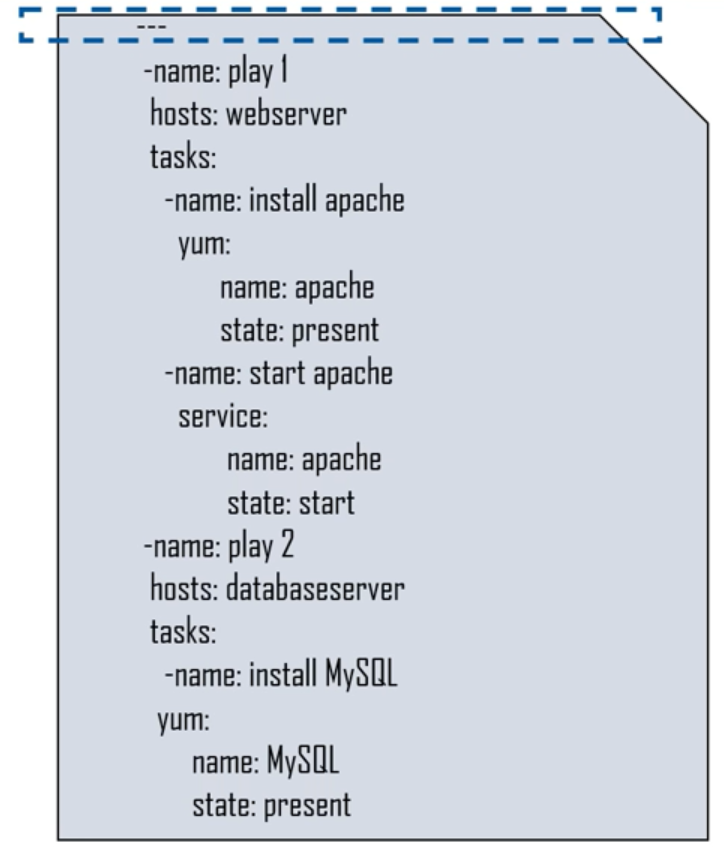
A Playbook is a list of plays
The script itself is actually consistent plays. At the top we have play 1 and below we have play 2.
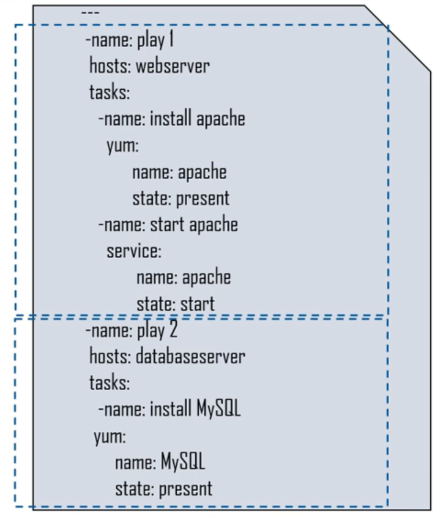
The host is the target for the play
Within each of those plays we define which nodes are we targeting. Here we have a web server at the top play and the second play we have a database server that we're targeting.
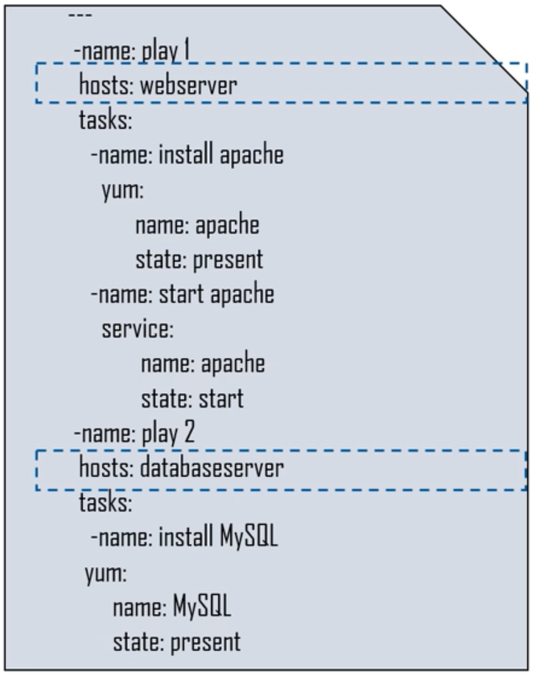
Each play has a list of tasks
Within each of those server environments, we have to spesific task that we're looking to execute.
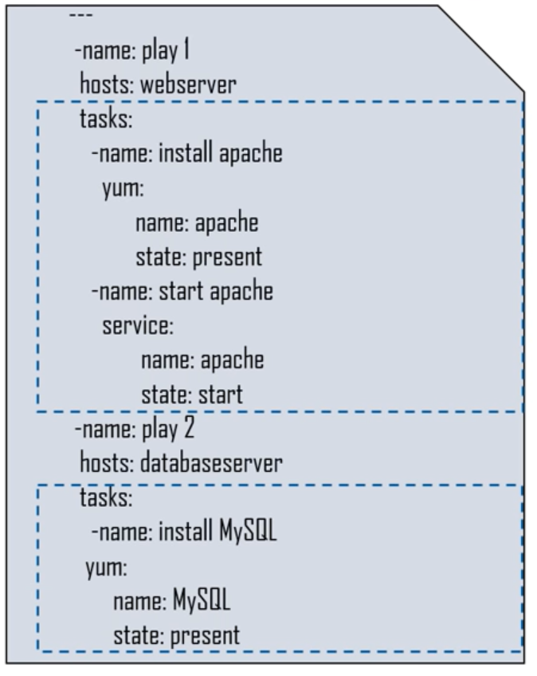
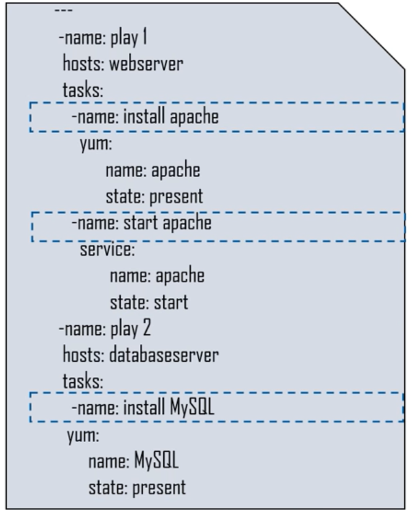
The name is followed by instructions to excute the task
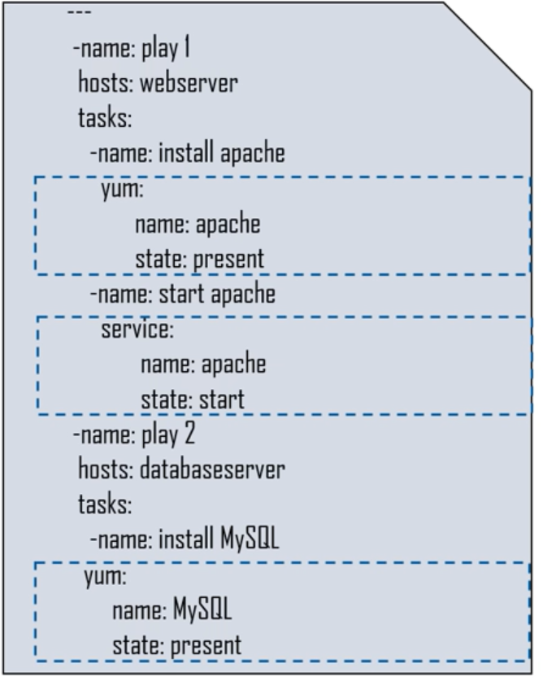
And when we do that we're going to execute a specific set of instructions and those instructions can include: "Installing Apache, setting the state of the Apache environments or starting the Apache environments and setting up and running MySQL environment
Let's take a step back though, we have tho hosts. We have a web server and database server... Where did these name comes from? From the Inventory.
An inventory file classifies nodes into groups
The inventory is where we maintain the structure of our network environment. What we do here is part of structure in creating different nodes as we've had to create two differents nodes.Under the web server node we have the names that we're pointed to to spesific machines whithin that environment.
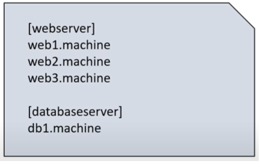
We have two groups here: 'webserver' and 'databaseserver'
So when we write our scripts all we have to do is refer to either 'webserver' or 'databaseserver' and the different server will have the instructions from the Yaml script executed on them.
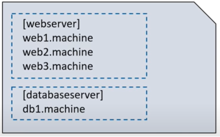
The hostnames of the nodes are espeficied under the group name
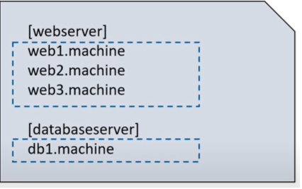
Before you install Ansible, review the requirements for a control node. Before you use Ansible, review the requirements for managed nodes (those end devices you want to automate).
Control nodes and managed nodes have different minimum requirements.
For your control node (the machine that runs Ansible), you can use any machine with Python 2 (version 2.7) or Python 3 (versions 3.5 and higher) installed. ansible-core 2.11 and Ansible 4.0.0 will make Python 3.8 a soft dependency for the control node, but will function with the aforementioned requirements. ansible-core 2.12 and Ansible 5.0.0 will require Python 3.8 or newer to function on the control node. Starting with ansible-core 2.11, the project will only be packaged for Python 3.8 and newer. This includes Red Hat, Debian, CentOS, macOS, any of the BSDs, and so on. Windows is not supported for the control node.
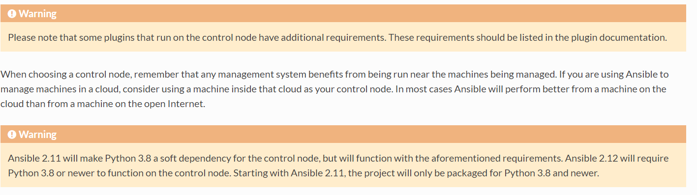
https://docs.ansible.com/ansible/latest/installation_guide/intro_installation.html#prerequisites
Although you do not need a daemon on your managed nodes, you do need a way for Ansible to communicate with them. For most managed nodes, Ansible makes a connection over SSH and transfers modules using SFTP. If SSH works but SFTP is not available on some of your managed nodes, you can switch to SCP in https://docs.ansible.com/ansible/latest/reference_appendices/config.html#ansible-configuration-settings. For any machine or device that can run Python, you also need Python 2 (version 2.6 or later) or Python 3 (version 3.5 or later).
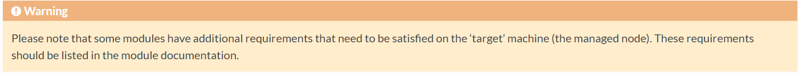
If you have SELinux enabled on remote nodes, you will also want to install libselinux-python on them before using any copy/file/template related functions in Ansible. You can use the yum module (https://docs.ansible.com/ansible/latest/collections/ansible/builtin/yum_module.html#yum-module) or dnf module (https://docs.ansible.com/ansible/latest/collections/ansible/builtin/dnf_module.html#dnf-module) in Ansible to install this package on remote systems that do not have it.
By default, before the first Python module in a playbook runs on a host, Ansible attempts to discover a suitable Python interpreter on that host. You can override the discovery behavior by setting the ansible_python_interpreter(https://docs.ansible.com/ansible/latest/user_guide/intro_inventory.html#ansible-python-interpreter) inventory variable to a specific interpreter, and in other ways. See Interpreter Discovery (https://docs.ansible.com/ansible/latest/reference_appendices/interpreter_discovery.html#interpreter-discovery)for details.
Ansible’s raw module(https://docs.ansible.com/ansible/latest/collections/ansible/builtin/raw_module.html#raw-module), and the script module, do not depend on a client side install of Python to run. Technically, you can use Ansible to install a compatible version of Python using the raw module, which then allows you to use everything else. For example, if you need to bootstrap Python 2 onto a RHEL-based system, you can install it as follows:
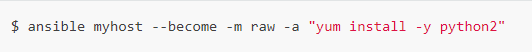
Starting with version 2.10, Ansible distributes two artifacts: a community package called ansible and a minimalist language and runtime called ansible-core (called ansible-base in version 2.10). Choose the Ansible artifact and version that matches your particular needs.
The ansible package includes the Ansible language and runtime plus a range of community curated Collections. It recreates and expands on the functionality that was included in Ansible 2.9.
Install the latest release with your OS package manager (for Red Hat Enterprise Linux (TM), CentOS, Fedora, Debian, or Ubuntu).
Install with pip (the Python package manager).
Ansible also distributes a minimalist object called ansible-core (or ansible-base in version 2.10). It contains the Ansible language, runtime, and a short list of core modules and other plugins. You can build functionality on top of ansible-core by installing collections from Galaxy, Automation Hub, or any other source.
You can choose any of the following ways to install ansible-core:
Install ansible-core (version 2.11 and greater) or ansible-base (version 2.10) with pip.
Install ansible-core from source from the ansible/ansible GitHub repository to access the development (devel) version to develop or test the latest features.
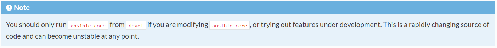
Ansible generally creates new releases twice a year. See Release and maintenance (https://docs.ansible.com/ansible/latest/reference_appendices/release_and_maintenance.html#release-and-maintenance) for information on release timing and maintenance of older releases.
Ansible can be installed on many systems with pip, the Python package manager.
If pip is not already available on your system, run the following commands to install it:
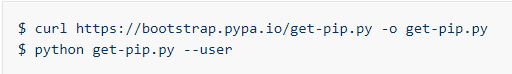
You may need to perform some additional configuration before you are able to run Ansible. See the Python documentation on installing to the user site for more information.
Installing. (https://packaging.python.org/tutorials/installing-packages/#installing-to-the-user-site)
Once pip is installed, you can install Ansible
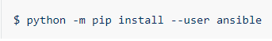
In order to use the paramiko connection plugin or modules that require paramiko, install the required module :
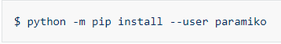
If you wish to install Ansible globally, run the following commands:
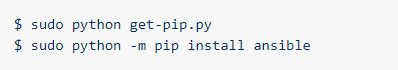
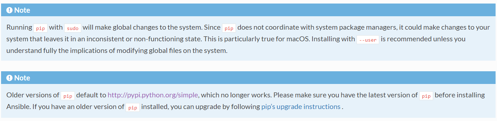
Ubuntu builds are available in a PPA here (https://launchpad.net/~ansible/+archive/ubuntu/ansible)
PPA stand for Personal Package Archives
Personal Package Archives (PPAs) are software repositories designed for Ubuntu users and are easier to install than other third-party repositories. PPAs are often used to distribute pre-release software so that it can be tested.}
To configure the PPA on your machine and install Ansible run these commands:
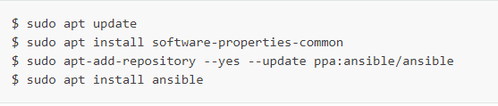
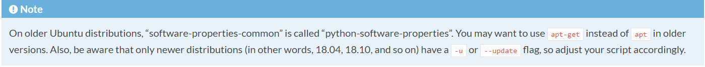
Debian/Ubuntu packages can also be built from the source checkout, run:
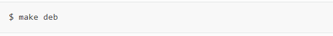